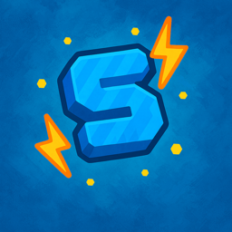

HTML
Markup & structure
I'm BEMBOO — a young developer working across web development, Minecraft server configuration and server maintenance. I like taking messy systems and making them feel simple.
I'm BEMBOO, a young developer who enjoys building useful things, maintaining Minecraft servers and learning full-stack development.
My main experience is server configuration, maintenance and troubleshooting. On the web side, I'm building my skills with HTML, CSS and JavaScript.
Markup & structure
Interfaces & motion
Interaction & logic

Servers & systems
Organising plugins, permissions, settings and systems so a Minecraft server stays clean and reliable.
Configuration · Permissions · SystemsFinding weird issues, checking what changed and fixing problems without making the system harder to manage.
Debugging · Optimisation · TroubleshootingBuilding responsive interfaces with clean structure, useful interactions and a focus on how the site actually feels.
HTML · CSS · JavaScriptEvery visual effect has a reason.
Clean code beats unnecessary complexity.
There is always another thing to learn.
Less showing off. More actually doing the job.

My main server experience. I maintain both the Lifesteal and Practice servers, handling configuration, maintenance, troubleshooting and keeping the network running smoothly.
I'm easiest to reach through Discord.